以后会更正排版
对之前的项目进行优化和更新
为了在重新构建项目中清晰明了的记录整个过程，特作该笔记：
预计整个过程在1天左右：
首先用PyCharm创建项目，记得之前的项目不是PyCharm创建的，哪个创建的都无所谓了。
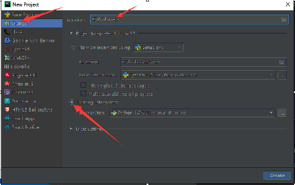
选好项目类型-Django项目，文件夹(项目路径)。这里我选择的是现成的python配置环境，也就是系统的python配置环境。还可以创建一个虚拟的环境，给该项目专门提供服务，我嫌麻烦一般都是直接选现有现成的系统环境。
然后在项目栏可以看到经典的Django目录结构，以及里面的一些创建即生成的文件：
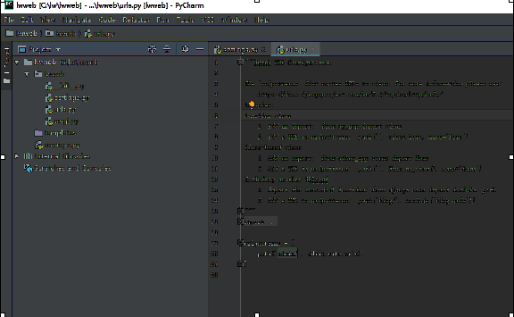
这些文件的名字一般是无需改动的。需要改动的是里面的内容。
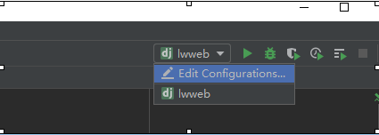在右上角设置一下运行选项：
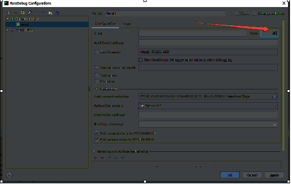
默认是8000，我喜欢直接设成80，然后ok即可。
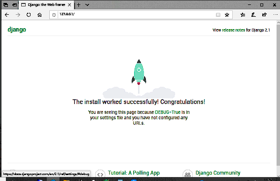
在浏览器输入测试地址，访问一下哈看是否能运行。
这里我发现Django版本貌似有点老了，我喜欢更新，我去更新一下：
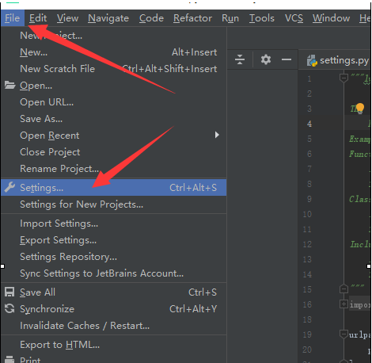
 双击要更新的条目
双击要更新的条目
 这个install to user's site packages directory勾不勾选到现在还没发现问题，具体不甚了解。
点这里即可
按完后在及运行网站可以查看到已经是很新的版本了，貌似还是测试版：
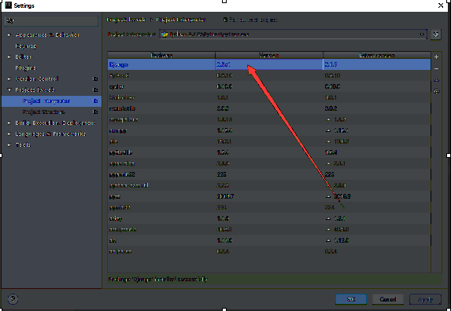
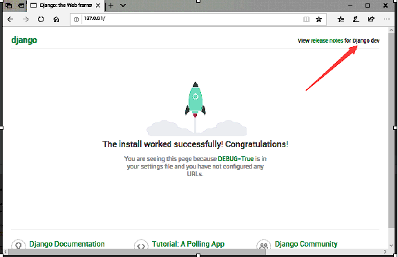
发现都没版本号了，估计测试版都这样，
可以去pip list去看看：
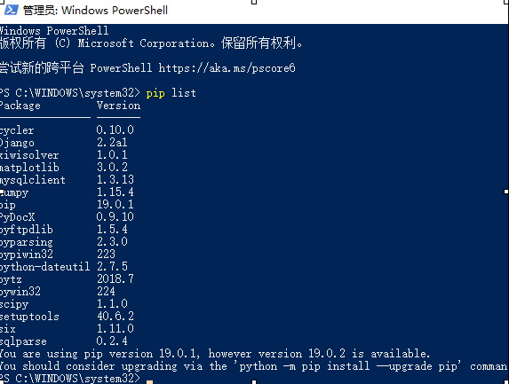
可见在系统的环境中 django升级成功了，那么就不用管他了。。。
接下来继续网站建设：
django需要创建一个应用来实现网站功能，跟链接数据库，我用的mysql数据库，连接的时候需要一个特殊的python库。这里不多讲，首先创建一个数据库：
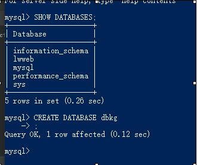
然后设置数据库链接设置，按照数据库配置的来：
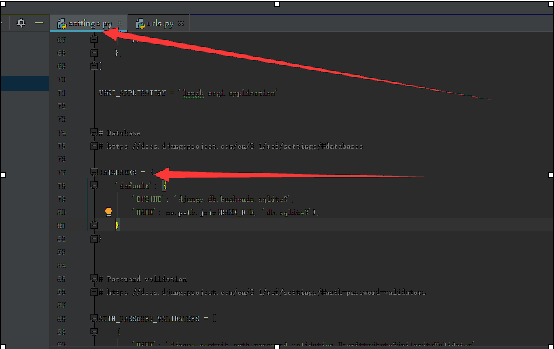
先在settings.py找到数据库设置
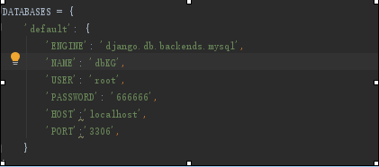
把原来默认的改成mysql。
然后用命令创建app，名字随便:
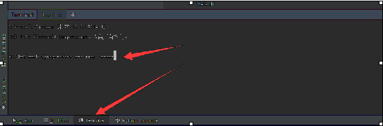
然后项目中就多出了这样一个文件夹与一些默认生成的文件：
这个install to user's site packages directory勾不勾选到现在还没发现问题，具体不甚了解。
点这里即可
按完后在及运行网站可以查看到已经是很新的版本了，貌似还是测试版：
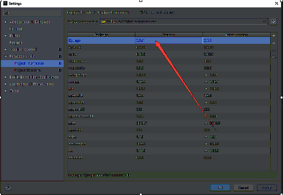
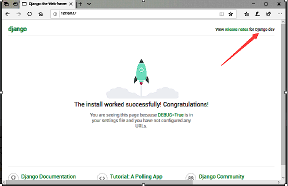
发现都没版本号了，估计测试版都这样，
可以去pip list去看看：
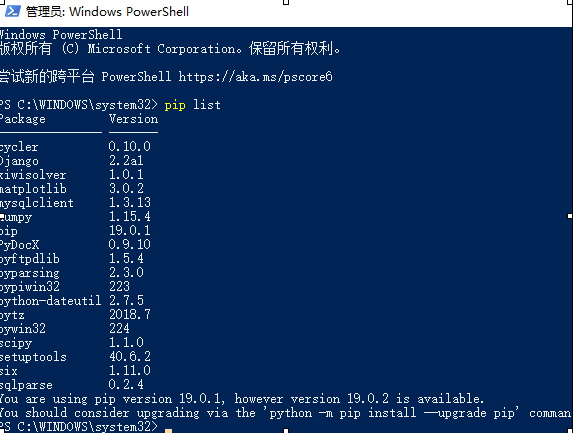
可见在系统的环境中 django升级成功了，那么就不用管他了。。。
接下来继续网站建设：
django需要创建一个应用来实现网站功能，跟链接数据库，我用的mysql数据库，连接的时候需要一个特殊的python库。这里不多讲，首先创建一个数据库：
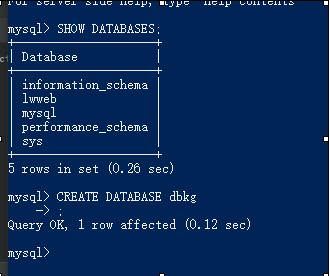
然后设置数据库链接设置，按照数据库配置的来：
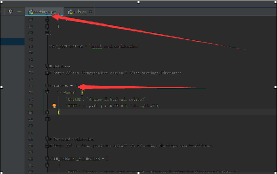
先在settings.py找到数据库设置
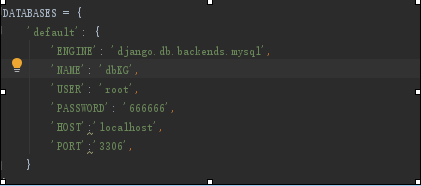
把原来默认的改成mysql。
然后用命令创建app，名字随便:
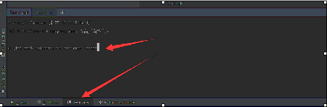
然后项目中就多出了这样一个文件夹与一些默认生成的文件：
 接下来在models.py文件进行数据表的设计：
这里的数据表将严格按照论文中设计的进行设计：
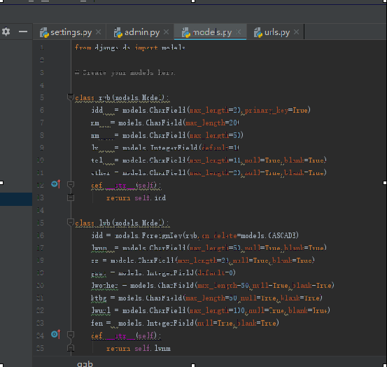
然后用命令创建数据库跟表：
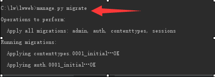
我已经执行了，下面出现好多东西，不用管，毕竟都是ok。
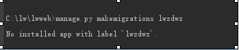
然后执行这一句，出错了，这是因为没有在这里添加上我创建的APP
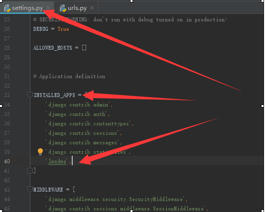
添加好即可，执行ok了：
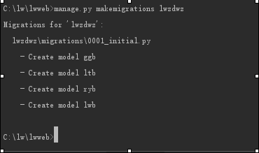
然后执行：
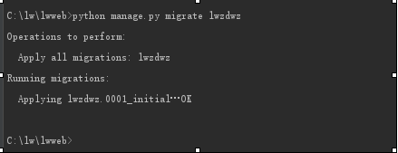
ok了，不放心的话去mysql里看一下：
接下来在models.py文件进行数据表的设计：
这里的数据表将严格按照论文中设计的进行设计：
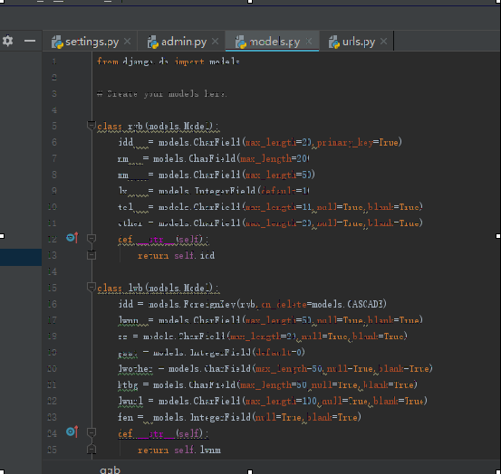
然后用命令创建数据库跟表：
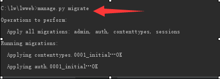
我已经执行了，下面出现好多东西，不用管，毕竟都是ok。
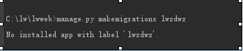
然后执行这一句，出错了，这是因为没有在这里添加上我创建的APP
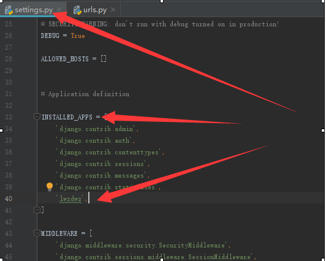
添加好即可，执行ok了：
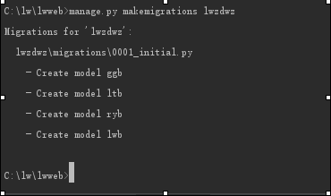
然后执行：
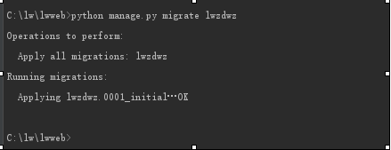
ok了，不放心的话去mysql里看一下：
 可以发现除了我们创建的表以外，其他的一些是django自己生成的。
实际上可以发现diango自带了一些对用户啊，组啊的一些处理方案。但在该网站设计中并没有用到它自带的，多为自己实现的。
-----------------------------------------------------------------------------------skip1
可以发现除了我们创建的表以外，其他的一些是django自己生成的。
实际上可以发现diango自带了一些对用户啊，组啊的一些处理方案。但在该网站设计中并没有用到它自带的，多为自己实现的。
-----------------------------------------------------------------------------------skip1